中文
中文开箱体验
更新历史
| 日期 | 版本 | 作者 | 更新内容 |
|---|---|---|---|
| 2023-05-08 | v1.0 | wonder |
|
开箱内容
LicheePi 4A 分为两个版本，内测版与正式版。
内测版于 2023 年 5 月发售，仅有 8+8（DDR+eMMC）版本，各部分功能基本正常。
正式版于 2023 年 7 月发售，有 8+32,16+128 版本，也会针对内测版用户提出的相关建议进行局部微调优化，功能/镜像与内测版会保持一致。
内测版
如果你是第一批内测版 LicheePi 4A 用户，你收到的包裹内将是如下包装：
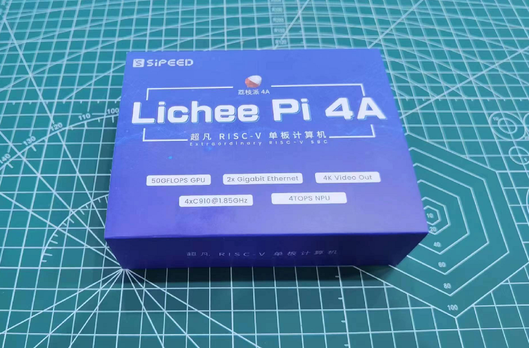
打开塑料盒包装，你将看到如下的内容：

包裹在黑色泡棉内的就是 LicheePi 4A 主体，其余标号部件为：
- 30x30mm 散热硅脂
- 30mm 5V 散热风扇，右边已连接至风扇插针。如果松动脱出，请自行安装回去，注意红线为正极，装反后风扇不会转动。
- 2.4G WiFi 天线，已安装至 IPEX 座子。如果松动脱出，请自行安装回去。
- USB-C 线缆，作为供电和下载镜像使用。
如果开箱后发现缺少相关部件，请联系客服咨询。
正式版
如果你购买了正式版 LicheePi 4A，你收到的包裹内将是如下包装：

在包装侧面可以看到当前硬件的 内存/eMMC 版本，如果发现与你购买的版本不符，请与客服联系：
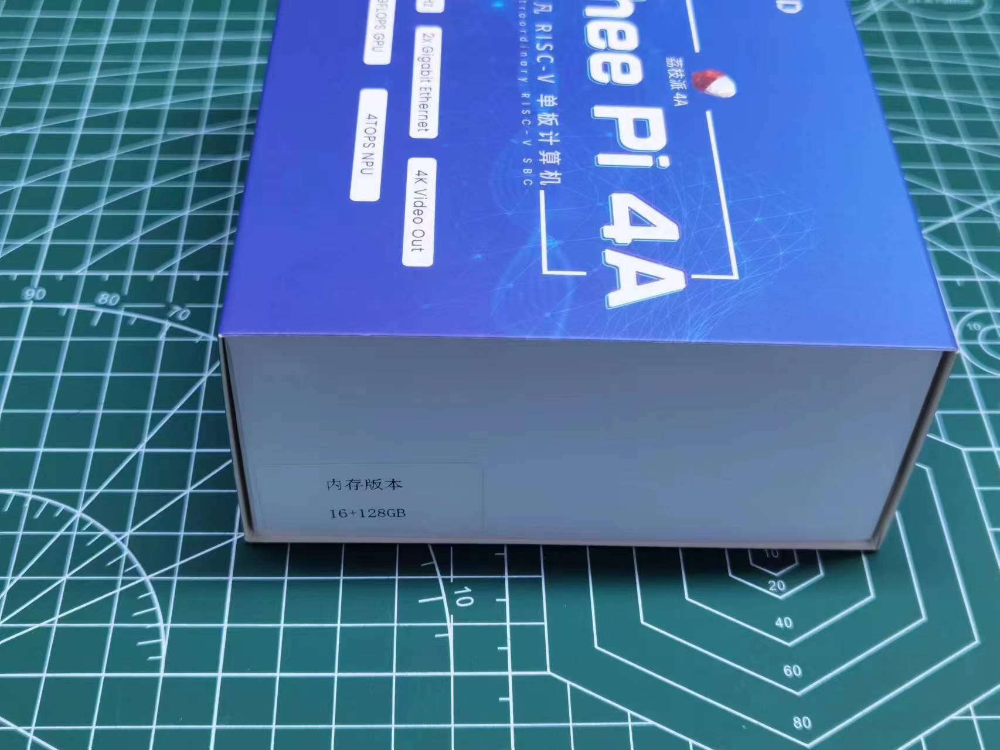
移除蓝色封盖，是白色纸盒包装：

打开白色纸盒，就可以看到LicheePi 4A板卡：
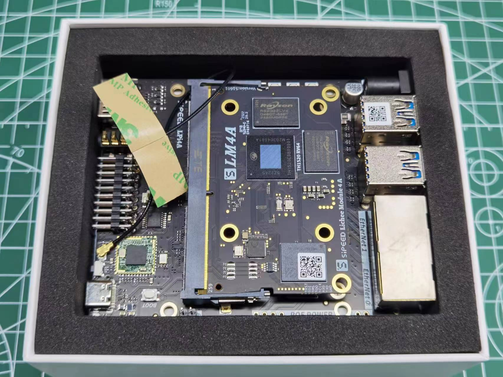
可以看到板卡上贴了两个二维码，在底板USB上贴的二维码为底板生产信息，代表了底板型号版本，生产日期，如：
LPI4A0-23070702067
在SOM上贴的二维码为SOM生产信息，代表了 SOM型号版本，内存eMMC，MAC地址（第二个网口地址为此地址+1），生产日期，如：
LM4A0-16128-48DA3560003E-23071100318
拿出开发板后，纸盒底部装着默认配件，USB线，散热器，散热硅脂：

如果开箱后发现缺少相关部件，请联系客服咨询。
选配件
LicheePi 4A还有丰富的配件可供选择，如下图所示：

选购说明：
| 配件名 | 选购说明 |
|---|---|
| 铝合金外壳 | 适合作为小主机，软路由的外壳 |
| 10.1寸触摸屏 | 1280x800 4lane MIPI，适合作为车机，安卓 调试使用 |
| OV5693 摄像头 | 5MP摄像头，适合作为移动设备，如安卓的原生摄像头调试 |
| USB摄像头 | 5MP USB摄像头，板载麦克风，适合作为openCV的摄像头使用 |
| PoE电源模块 | 5V2.4A PoE电源模块，网关类应用使用网线PoE供电 |
| 12V电源 | 12V2A电源适配器，板卡外接很多耗电外设时选购 |
| RV Debugger Plus | UART+JTAG调试小板，连接系统串口终端调试用 |
组装板卡
SOM安装
默认情况下 LM4A SOM 已经安装至主板上，如果你需要升级/替换 SOM，可按如下说明进行 SOM 的取出和安装
取出 SOM:
先用手指往外拨动弹片解锁 SOM, 然后将 SOM 取出 

安装 SOM:
先把 SOM 斜着插入连接器插槽, 然后按压SOM，两边弹片会自动锁住SOM 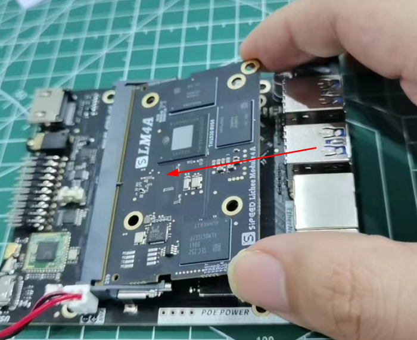 
散热器安装
LicheePi 4A 是高性能 SBC，需要安装主动散热器对 SOM 进行散热，否则在满载时可能由于核心过热而自动降频，无法达到最优性能。
安装导热硅脂片
取出导热硅脂片，撕开两面薄膜，将硅脂片放置在下图位置并轻轻按压固定（硅脂片自己具备一定粘性可以固定住），注意完整覆盖住主芯片与两颗内存芯片
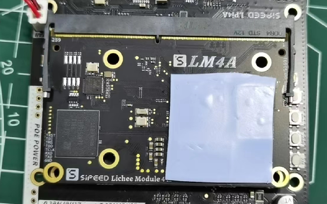安装散热风扇
在硅脂片上对齐安装30mm的散热风扇，并轻轻按压固定住。

安装散热风扇电源
默认收到时应该已经插入好了风扇电源，如果风扇电源线脱出，请按下图所示插入，注意电源线顺序，装反风扇不会旋转。
注意，该位置上的插针电源受 linux 内核控制，需正确配置内核才会旋转，如果风扇不转，也可插到板卡下方的 20pin 插针的 5V + GND 处测试风扇好坏。

WIFI天线安装
默认情况下WIFI天线已经安装在主板上，如果脱出，请按照下图安装回去：
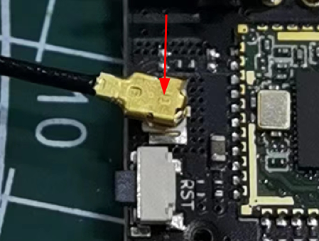
POE模块安装
该模块需额外购买，规格为35.6mm长度的5V PoE供电模块，焊接在开发板的POE POWER位置。
PoE模块安装如图所示：
 |
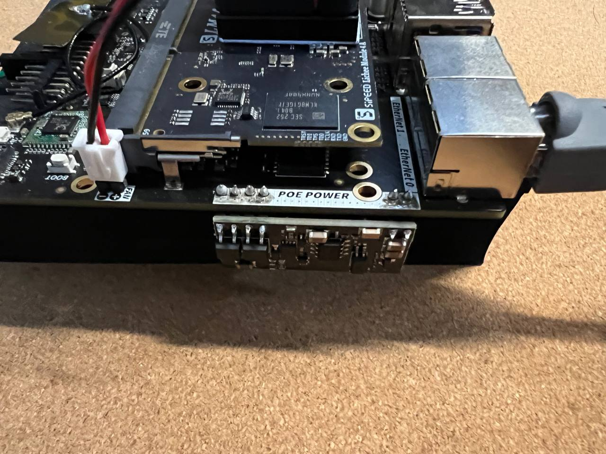 |
组装完成
组装完成后的状态如下所示：
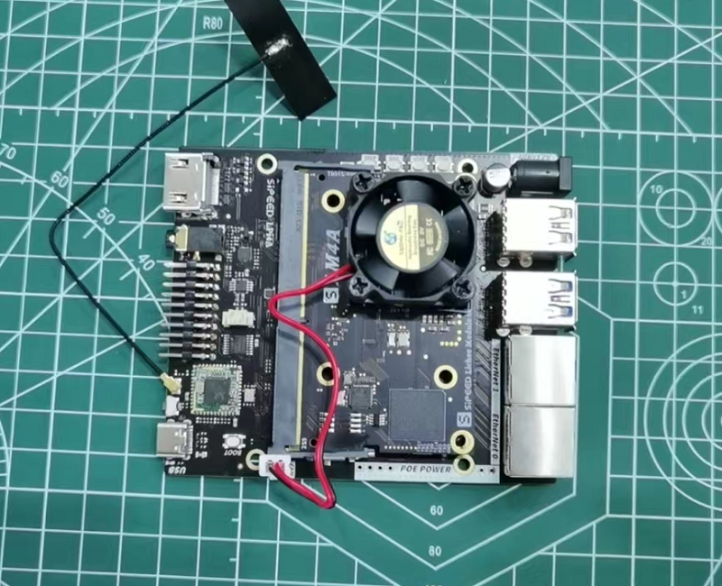
启动板卡
LicheePi 4A出库已预烧录了基础系统镜像，至此你已可以快速进行开机体验！
注意：预烧录的系统镜像版本可能比较旧，体验不佳，完成上电体验后，可以根据下章教程进行镜像更新。
使用 HDMI 线缆(自备)连接显示器(自备)与 LicheePi 4A 的 HDMI 口，使用配套的 USB-C 线缆连接到至少 5V2A 输出的 USB 电源(自备)上，LicheePi 4A 即会开机启动，默认镜像会在 30s 内启动到桌面系统的登录界面，或者自动使用sipeed账户登录到桌面。

默认镜像的帐号密码配置如下：
账户：debian，密码： debian；
账户： sipeed，密码：licheepi；
root 账户默认没有设置密码。
插入键鼠，输入用户名密码后即可登录体验，具体操作请查看后续章节。
如果按照上述操作，没能点亮显示器，进入系统，有以下可能请自查：
- 检查电源电压是否正常，USB-C 口连接是否正常，电源指示灯是否点亮
- 检查散热器是否正常安装，风扇是否旋转
- 检查 HDMI 是否稳固连接，显示器是否开机，以及可以尝试更换显示器测试
- 也可能是出厂遗漏固件烧录，请按下章方法进行镜像烧录后再试
- 如果以上均不奏效，请联系客服售后
铝合金外壳安装说明
外壳配件概览
外壳配件应包含如下内容，如有缺失，请联系客服。

从左到右分别是：
- 3507涡轮风扇
- 40x40x5mm 铝散热片
- 小号十字螺丝刀
- M3x5 平头螺丝 8颗
- 外壳挡板x2
- IPEX转SMA转接线 + SMA棒状天线
- 30x30mm 导热硅脂片
- 铝合金外壳x2
安装散热片
- 准备开发板
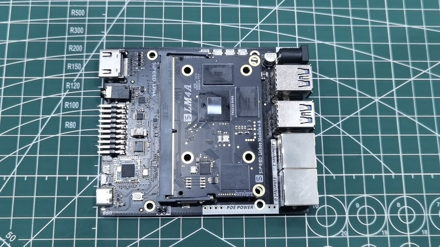
2. 粘贴导热硅脂
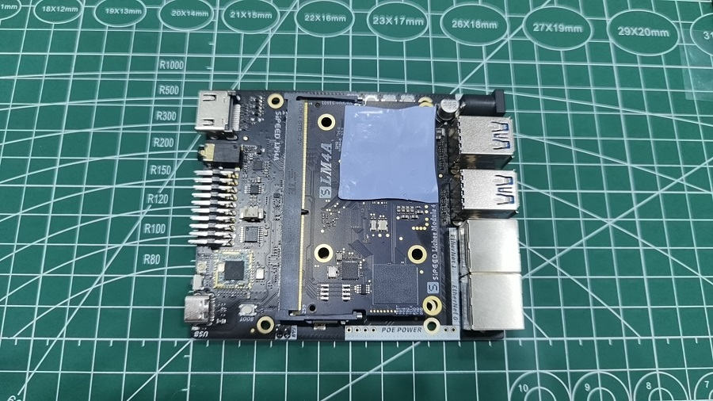
3. 按方向安装散热片
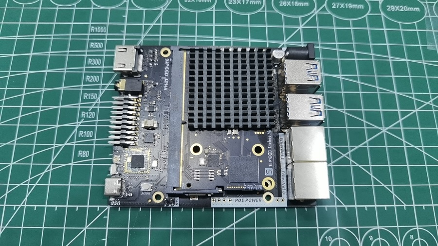
安装盖板
- 滑入开发板
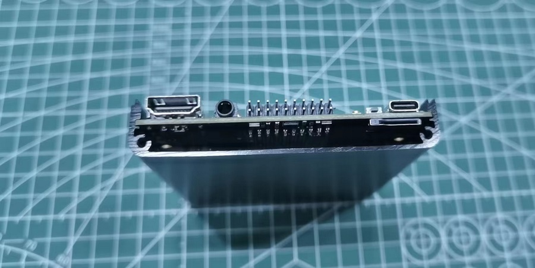
2. 安装天线到盖板
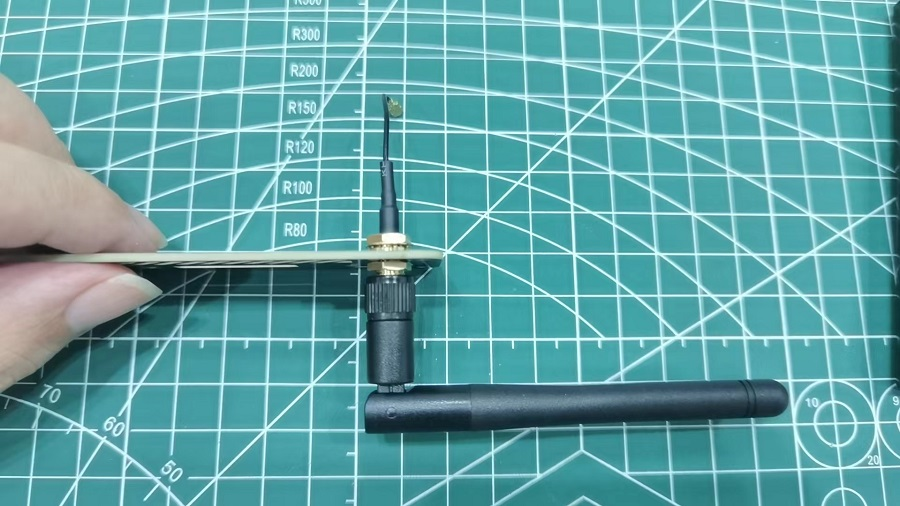
3. 安装天线到PCB
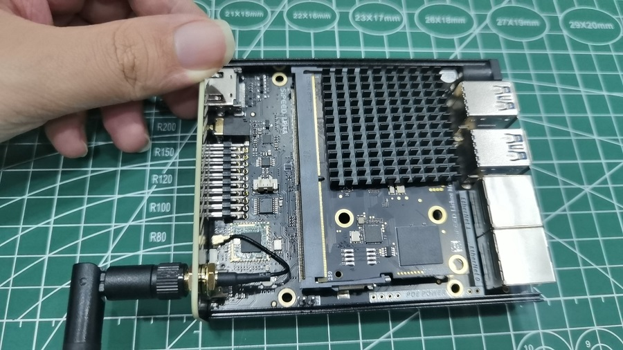
4. 安装前盖板（2颗螺丝）
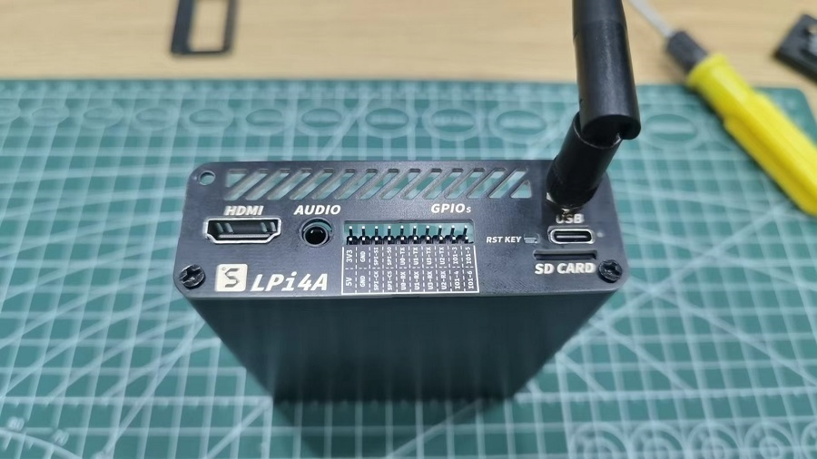
5. 撕开后盖板泡棉胶
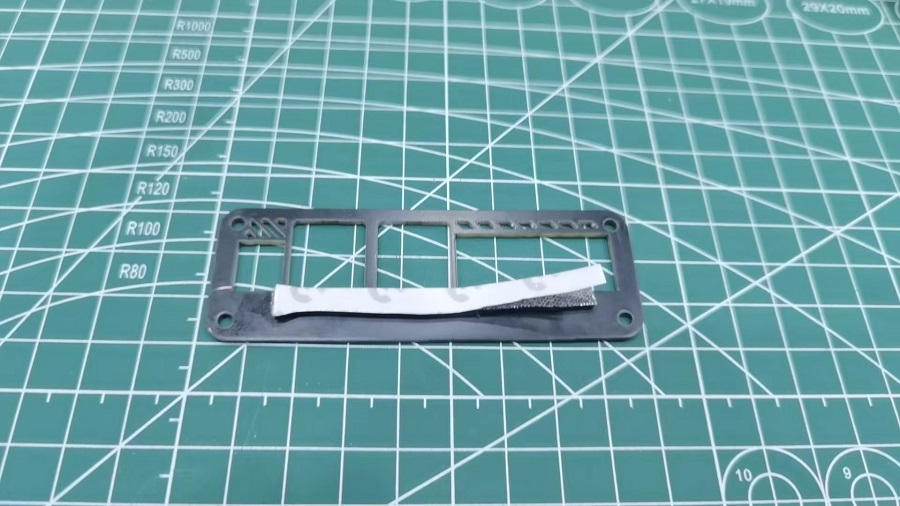
6. 安装后盖板（2颗螺丝）
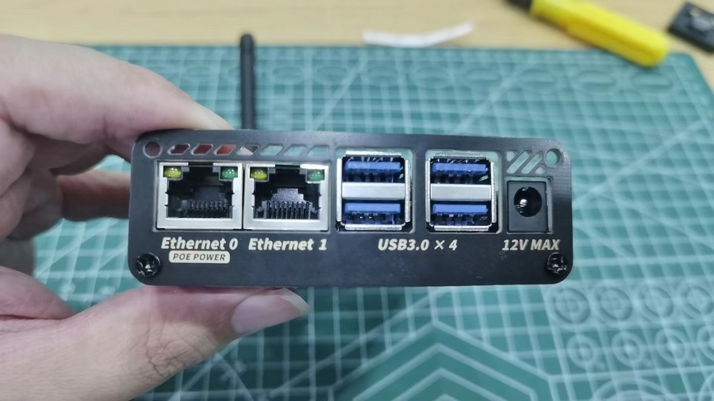
安装风扇
- 插入风扇电源线到板卡插针（上正下负），粘贴风扇到顶壳（注意风扇靠近外壳边缘粘贴，拉直连接线，否则会卡住外壳）
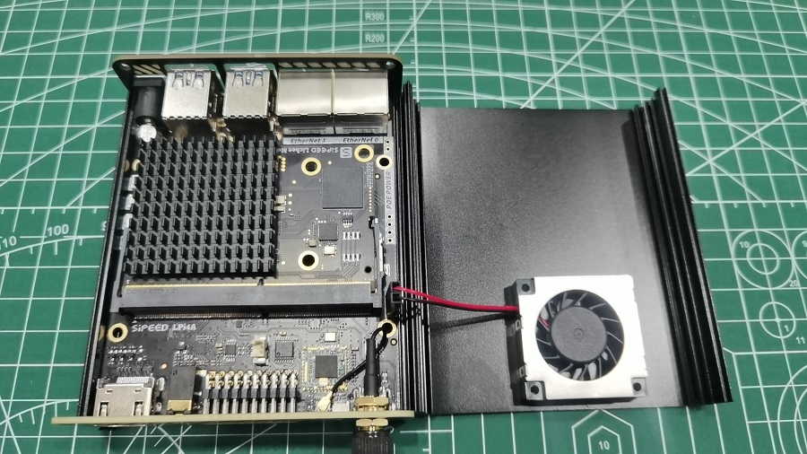
2. 从右侧小心向左侧盖住顶壳（务必注意方向，否则风扇插针会卡住）
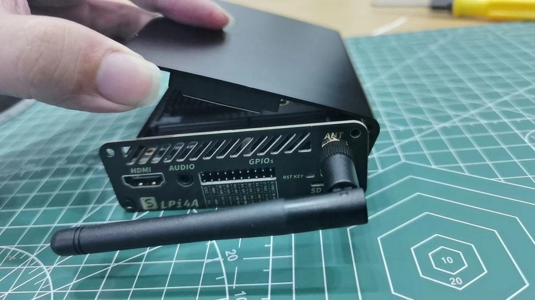
安装剩余螺丝
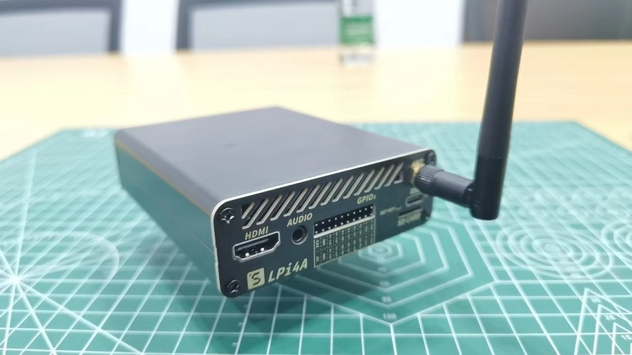
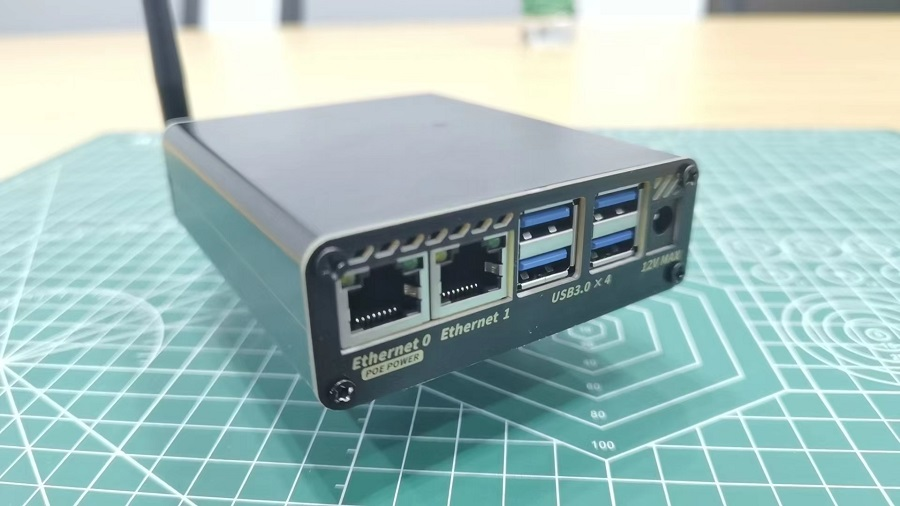
最终效果

POE模块安装说明
POE模块需要用户手工焊接安装，请按下图焊接：

注意 POE模块焊接后无法装入铝合金外壳。
板卡硬件说明
完成初次点亮板卡后，可以静下心来认识下 LicheePi 4A 的硬件，方便后期可能的维护工作。

超频说明
TH1520 标称频率为 1.85GHz，我们仅保证你收到的板卡可以稳定工作在 1.85GHz。
如果你是发烧玩家，想进行超频操作，那么你有一定概率可以超频到 2GHz，但我们不保证在该频率下的稳定性。
经不完全测试，约有 80% 的 SOM 可以超频至 2GHz 启动系统，约有 50% 的 SOM 可以在 2GHz 下跑通压力测试。
USB 限流说明
由于系统最大电源输入能力为 12V2A，即约 24W，转换为 5V 后，大约有 20W 左右有效功率。
为了更好地为 SOM 供电（SOM 在超频满载情况下可达 12W 功率），所以 USB HUB 处进行了电流限制，限制了 1.5A 的电流（内测版硬件。正式版硬件会根据反馈调整此处电流限制），即 7.5W 功率。
再接入大量 USB 设备时可能会超出该电流限制，此时建议对 USB 设备进行外部辅助供电。
如果需要解除此处电流限制，请进行如下操作：TODO。
正式版相对内测版差异说明
- 新增USB-C口输入处的高压保护，防止某些快充适配器输入高压烧毁SOM
- 系统串口IO新增电平转换IC到3.3V，可以使用普通串口模块连接
- 修复耳机，扬声器 自动切换电路 （内测版扬声器电路切换不到位而不稳定）
- 耳机座中新增一路mic输入
- 新增启动介质拨码开关（SOM底部），可选TF/eMMC启动
- 其他细节丝印，元件微调
硬件资料下载
其他链接
QQ群: 559614960 点我自动加群
Telegram: https://t.me/linux4rv
论坛：bbs.sipeed.com
联系邮箱：support@sipeed.com